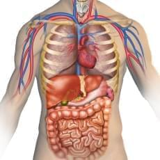

Our prerequisites ensure that you jump right into the technology of Magnetic Resonance Imaging. While it is advantageous for an applicant to have previous experience in diagnostic imaging or have a medical background, it is not required. Any a successful applicant must first demonstrate the following:
- 
1- A CLEAR UNDERSTANDING AND USE OF MEDICAL TERMINOLOGY
Do you know the difference between the sella tursica and the pituitary gland ? How about the largest organ in the human body ?
2 - A THOROUGH KNOWLEDGE OF ANATOMY AND PHYSIOLOGY
Can you walk the walk and talk the talk ?
3 - THE ABILITY TO GRASP ABSTRACT CONCEPTS AND APPLY THEM TO REAL WORLD SCENARIOS
Can you teach me what a vector is ? In the science world, what is a quantum leap ?
4 - SUPERIOR ORAL AND WRITTEN COMMUNICATIONS SKILLS
We are not looking for John Steinbeck, just someone that communicates a thought in a logical and concise manner. That's all.

Want a Leg Up?
Demonstrate your ability to express empathy and care for anyone with whom you would come into contact in your daily profession as an MRI Technologist.
Have a medical background, or better yet, a medical imaging background. Remember though, it's not required, just helpful.
Have leadership experience - military, managerial, etc.
Show us you are confident and committed to your training and your profession.